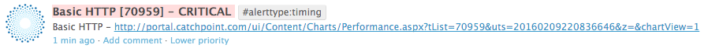
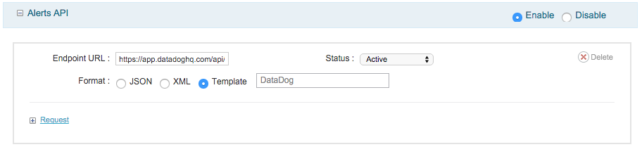

Catchpoint
Connect to Catchpoint to:

To get Catchpoint alerts into your stream, login into the Catchpoint Portal and goto Settings > API.
https://app.datadoghq.com/api/v1/events?api_key=API key
{
"title": "${TestName} [${TestId}] - ${switch(${notificationLevelId},'0','WARNING','1','CRITICAL','3','OK')}",
"text": "${TestName} - http://portal.catchpoint.com/ui/Content/Charts/Performance.aspx?tList=
${testId}&uts=${alertProcessingTimestampUtc}&z=&chartView=1",
"priority": "normal",
"tags": ["alertType:${Switch(${AlertTypeId},'0', 'Unknown','2', 'Byte Length','3',
'Content Match','4', 'Host Failure','7', 'Timing','9', 'Test Failure', '10',
'Insight', '11','Javascript Failure', '12', 'Ping',13, 'Requests')}"],
"alert_type": "${switch(${notificationLevelId},'0','warning','1','error','3','success')}",
"source_type_name": "catchpoint"
}
